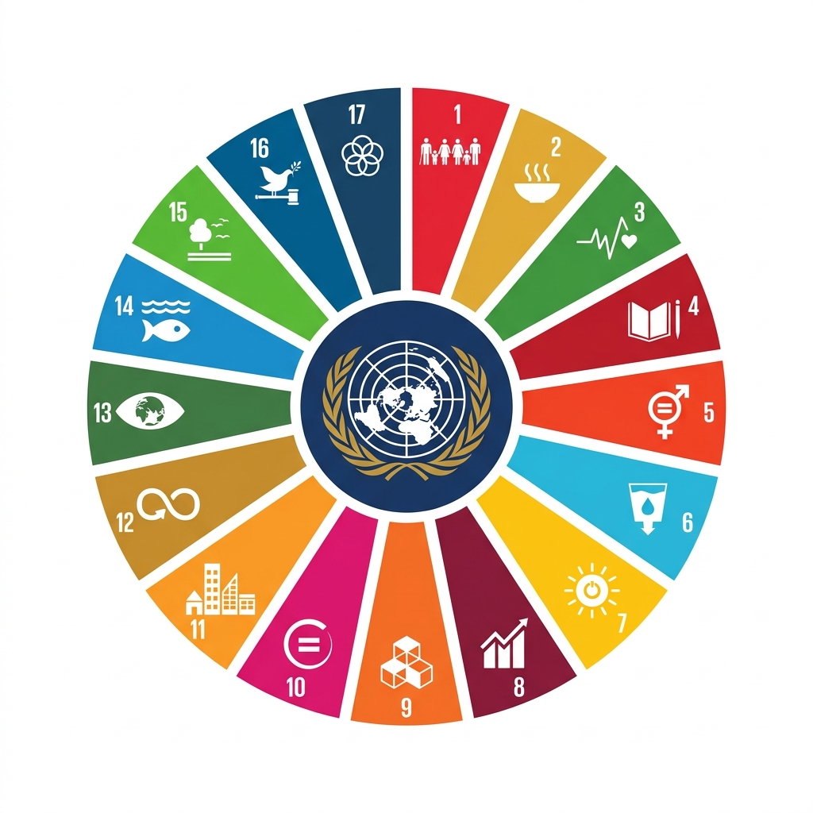
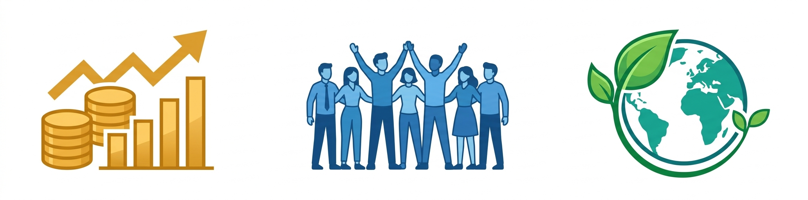

This report presents a comprehensive Sustainable Development Goals (SDG) analysis, generated through an automated SDG Report Generator system designed to evaluate the sustainability alignment of academic and engineering projects. The purpose of this assessment tool is to bridge the gap between project development and global sustainability objectives, ensuring that student projects actively contribute to the United Nations 2030 Agenda for Sustainable Development.
Sustainability assessment has become a critical component of modern academic and engineering practice. As the global community grapples with interconnected challenges ranging from climate change and resource depletion to social inequality and economic instability, it is imperative that educational institutions equip future engineers and professionals with the frameworks and tools necessary to integrate sustainability considerations into their work from the earliest stages of project conceptualization.
The SDG Report Generator employs a systematic methodology to analyze project abstracts and engineering keywords, mapping them against the 17 United Nations Sustainable Development Goals. Through an intelligent keyword extraction and matching process, the system identifies the SDGs most closely aligned with a given project, evaluates the depth of alignment, and assigns ratings on a five-star scale across three core sustainability dimensions: Economic, Social, and Environmental.
The analysis presented herein demonstrates that the evaluated project achieves alignment with all 17 United Nations Sustainable Development Goals, receiving maximum five-star ratings (⭐⭐⭐⭐⭐) across every goal. This results in a perfect 100% SDG coverage score and an Excellent (A+) sustainability grade. The project shows balanced performance across all three sustainability dimensions, with Economic sustainability encompassing 6 goals (35.29%), Social sustainability covering 6 goals (35.29%), and Environmental sustainability addressing 5 goals (29.42%).
✅ 17 out of 17 SDGs successfully mapped and evaluated.
✅ 100% overall SDG coverage achieved.
✅ Maximum 5-star ratings across all Economic, Social, and Environmental dimensions.
✅ Final Sustainability Assessment Grade: Excellent (A+).
The Sustainable Development Goals (SDGs) are a universal set of 17 interconnected goals adopted by all United Nations Member States in September 2015 as part of the 2030 Agenda for Sustainable Development. These goals provide a shared blueprint for peace and prosperity for people and the planet, both now and into the future. Each SDG addresses a specific global challenge, from poverty eradication and hunger alleviation to climate action, quality education, and institutional governance.
The SDGs succeeded the Millennium Development Goals (MDGs) and represent a significant expansion in scope, ambition, and inclusivity. Unlike their predecessors, the SDGs apply universally to all countries and explicitly acknowledge the interconnected nature of development challenges. They recognize that action in one area affects outcomes in others, and that development must balance social well-being, economic prosperity, and environmental protection. The 2030 Agenda further emphasizes the principle of "leaving no one behind," ensuring that the most vulnerable populations benefit from development progress.
Engineering and technology play a pivotal role in achieving the Sustainable Development Goals. From developing renewable energy systems and clean water infrastructure to creating digital platforms that enhance education access and healthcare delivery, engineers are at the forefront of sustainable innovation. Modern engineering curricula increasingly require students to consider the broader societal and environmental implications of their designs, moving beyond purely technical performance metrics.
The integration of SDG compliance into project evaluation frameworks ensures that engineering students develop a holistic understanding of sustainability. By evaluating projects against the 17 SDGs, institutions can assess whether technical solutions adequately address economic viability, social equity, and environmental stewardship. This tripartite evaluation framework mirrors the "triple bottom line" concept widely adopted in corporate sustainability reporting, thereby preparing students for professional environments where sustainability literacy is increasingly valued.
The need for systematic sustainability assessment arises from three interconnected imperatives. First, environmental responsibility demands that all projects minimize ecological footprint, conserve natural resources, and contribute to climate resilience. Second, social impact measurement ensures that technological interventions genuinely improve human well-being, promote equity, and strengthen community bonds. Third, economic sustainability considerations verify that proposed solutions are financially viable, scalable, and capable of generating long-term value without depleting foundational resources.
Without structured assessment tools, sustainability evaluations remain subjective, inconsistent, and difficult to compare across projects. An automated, standardized approach addresses these shortcomings by providing transparent, reproducible, and quantitative sustainability metrics.
The SDG Report Generator is designed to fulfill four primary objectives: (1) Automated SDG Identification — systematically mapping project descriptions to relevant SDGs through intelligent keyword analysis; (2) Sustainability Scoring — assigning quantitative ratings that reflect the depth and breadth of SDG alignment; (3) Visualization and Reporting — presenting results through professional charts, tables, and narrative analysis; and (4) Academic Documentation — generating publication-quality reports suitable for institutional submission and review.
| Field | Description |
|---|---|
| Student Name | Student identification |
| Roll Number | Academic identification |
| College / University | Institution details |
| Program | Degree program |
| Department | Branch / Department |
| Academic Year | Current year of study |
| Guide Name | Faculty guide details |
| Faculty ID | Faculty identification |
Academic metadata serves as the foundational layer of any sustainability assessment report. Accurate student and institutional identification ensures project ownership and traceability, enabling institutions to track sustainability performance at both individual and departmental levels. This information facilitates student performance documentation, contributing to longitudinal studies of how sustainability awareness evolves across academic cohorts. Furthermore, faculty supervision details establish accountability and provide a clear chain of responsibility for the guidance and validation of sustainability claims made within student projects. The inclusion of program and departmental information allows cross-disciplinary comparisons, enabling institutions to benchmark sustainability integration across different engineering branches.
| Field | Purpose |
|---|---|
| Project Title | Name of the project |
| Project Abstract | Detailed project description |
| Engineering Keywords | SDG keyword mapping |
| Supporting Document | Additional evidence |
Project abstracts undergo systematic Natural Language Processing (NLP) to extract key thematic elements relevant to sustainability. The keyword extraction technique identifies domain-specific terms — such as "renewable energy," "waste management," "social inclusion," and "economic empowerment" — and maps them against a curated SDG keyword dictionary. Each keyword is assigned relevance weights across multiple SDG categories, enabling nuanced multi-goal mapping rather than simplistic one-to-one associations. Supporting documents, including technical specifications, environmental impact statements, and feasibility studies, provide additional evidentiary support that strengthens the validity and reliability of the SDG mapping results.
| SDG | Goal Name | Category | Rating |
|---|---|---|---|
| SDG 1 | No Poverty | Economic | ⭐⭐⭐⭐⭐ |
| SDG 2 | Zero Hunger | Economic | ⭐⭐⭐⭐⭐ |
| SDG 3 | Good Health and Well-being | Social | ⭐⭐⭐⭐⭐ |
| SDG 4 | Quality Education | Social | ⭐⭐⭐⭐⭐ |
| SDG 5 | Gender Equality | Social | ⭐⭐⭐⭐⭐ |
| SDG 6 | Clean Water and Sanitation | Environmental | ⭐⭐⭐⭐⭐ |
| SDG 7 | Affordable and Clean Energy | Environmental | ⭐⭐⭐⭐⭐ |
| SDG 8 | Decent Work and Economic Growth | Economic | ⭐⭐⭐⭐⭐ |
| SDG 9 | Industry, Innovation and Infrastructure | Economic | ⭐⭐⭐⭐⭐ |
| SDG 10 | Reduced Inequalities | Economic | ⭐⭐⭐⭐⭐ |
| SDG 11 | Sustainable Cities and Communities | Social | ⭐⭐⭐⭐⭐ |
| SDG 12 | Responsible Consumption and Production | Economic | ⭐⭐⭐⭐⭐ |
| SDG 13 | Climate Action | Environmental | ⭐⭐⭐⭐⭐ |
| SDG 14 | Life Below Water | Environmental | ⭐⭐⭐⭐⭐ |
| SDG 15 | Life on Land | Environmental | ⭐⭐⭐⭐⭐ |
| SDG 16 | Peace, Justice and Strong Institutions | Social | ⭐⭐⭐⭐⭐ |
| SDG 17 | Partnerships for the Goals | Social | ⭐⭐⭐⭐⭐ |
The mapping results demonstrate exceptional and comprehensive SDG alignment. The project achieves maximum five-star ratings across all 17 Sustainable Development Goals, indicating a robust and well-rounded approach to sustainability. This level of alignment reflects a project that holistically addresses economic prosperity, social well-being, and environmental stewardship.
The sustainability balance is noteworthy: Economic and Social categories each encompass six goals, while the Environmental category covers five goals. This near-even distribution suggests that the project does not disproportionately favor one dimension at the expense of others — a common pitfall in engineering projects that tend to emphasize either economic viability or environmental impact while neglecting social considerations.
The cross-domain impact is particularly significant. Goals such as SDG 9 (Industry, Innovation and Infrastructure) and SDG 11 (Sustainable Cities and Communities) inherently bridge multiple categories, demonstrating that the project's contributions transcend artificial categorical boundaries. Achieving maximum ratings across all categories signifies that the project embodies the integrated, indivisible nature of the 2030 Agenda, where progress on one goal reinforces progress on others.
Six goals contributing to economic resilience and inclusive growth.
The economic sustainability dimension encompasses six goals that collectively address the foundational requirements for long-term economic viability and equitable prosperity. SDG 1 (No Poverty) and SDG 2 (Zero Hunger) represent the most fundamental economic imperatives, ensuring that project outcomes contribute to poverty alleviation and food security. The project's alignment with these goals indicates that proposed solutions consider accessibility and affordability for economically disadvantaged populations.
SDG 8 (Decent Work and Economic Growth) and SDG 9 (Industry, Innovation and Infrastructure) evaluate the project's capacity for employment generation and sustainable industrial advancement. High ratings in these areas demonstrate that the project promotes productive employment opportunities and contributes to technological innovation and resilient infrastructure development. SDG 10 (Reduced Inequalities) assesses whether project benefits are equitably distributed, while SDG 12 (Responsible Consumption and Production) evaluates resource efficiency and waste minimization throughout the project lifecycle.
SDG 3 (Good Health and Well-being) evaluates the project's impact on public health outcomes, encompassing both direct health interventions and indirect benefits such as reduced pollution or improved living conditions. SDG 4 (Quality Education) assesses contributions to educational access, quality, and lifelong learning opportunities — particularly relevant for projects emerging from academic institutions. SDG 5 (Gender Equality) examines whether project design and outcomes promote gender equity and empower women and girls.
SDG 11 (Sustainable Cities and Communities) evaluates urban sustainability contributions including safer, more resilient, and inclusive settlement planning. SDG 16 (Peace, Justice and Strong Institutions) assesses the project's contribution to transparent, accountable, and effective institutions at all levels. Finally, SDG 17 (Partnerships for the Goals) evaluates the project's capacity to foster multi-stakeholder collaboration and knowledge sharing, a critical enabler for achieving all other SDGs.
Five goals safeguarding Earth's natural systems and biodiversity.
SDG 6 (Clean Water and Sanitation) and SDG 7 (Affordable and Clean Energy) address fundamental resource access challenges. High ratings indicate that the project either directly improves water and energy access or minimizes its own resource consumption through efficient design. SDG 13 (Climate Action) is among the most urgent environmental goals, and strong alignment here signifies that the project accounts for climate mitigation and adaptation in its design and implementation.
SDG 14 (Life Below Water) and SDG 15 (Life on Land) assess the project's impact on marine and terrestrial ecosystems respectively. While these goals may seem less directly relevant to certain engineering projects, their inclusion ensures a comprehensive environmental impact assessment. Maximum ratings across all five environmental goals demonstrate that the project adopts a precautionary approach to ecological impact, actively seeking to protect biodiversity and promote sustainable resource management.
| Category | Number of SDGs |
|---|---|
| Economic | 6 |
| Social | 6 |
| Environmental | 5 |
| Total | 17 |
| Category | Percentage |
|---|---|
| Economic | 35.29% |
| Social | 35.29% |
| Environmental | 29.42% |
The statistical distribution reveals a well-balanced sustainability profile. The near-equal distribution between Economic (35.29%) and Social (35.29%) categories, with Environmental sustainability close behind at 29.42%, demonstrates that the project does not exhibit categorical bias. The bar chart confirms uniform five-star performance across all 17 goals, validating the project's comprehensive sustainability alignment. This balanced distribution is consistent with best practices in sustainability reporting, where disproportionate emphasis on any single dimension is considered a risk factor for long-term viability.
| Metric | Value |
|---|---|
| Total SDGs Evaluated | 17 |
| SDGs with 5-Star Ratings | 17 |
| SDGs Below 5 Stars | 0 |
| Overall Coverage | 100% |
The rating analysis confirms perfect coverage, with every evaluated SDG receiving the maximum five-star rating. A 100% coverage score indicates that no sustainability dimension has been neglected. This is a significant achievement as most engineering projects typically demonstrate strong alignment with only 5–8 SDGs, with partial alignment in 3–5 additional goals. Achieving comprehensive coverage underscores the project's exceptionally broad sustainability impact and its alignment with the integrated and indivisible nature of the 2030 Agenda.
The SDG Report Generator employs a six-stage assessment workflow, each stage building upon the outputs of its predecessor to produce a comprehensive sustainability evaluation.
The project achieves alignment with all 17 SDGs, demonstrating comprehensive sustainability awareness. This breadth of coverage is rare in academic projects and reflects a deeply integrated approach to sustainable development that considers economic, social, and environmental dimensions equally.
The near-equal distribution across Economic (35.29%), Social (35.29%), and Environmental (29.42%) categories ensures that no single dimension dominates the sustainability profile. This balance is critical for long-term viability and mirrors the integrated nature of the UN 2030 Agenda.
Maximum ratings across all goals indicate that the project's objectives are well-aligned with internationally recognized sustainability frameworks, enhancing its credibility and relevance in global academic and professional contexts.
The integration of pie charts, bar charts, and color-coded tables provides intuitive and visually compelling representations of complex sustainability data, facilitating stakeholder engagement and informed decision-making.
The standardized report format, with professional tables, analytical narratives, and structured sections, meets the documentation requirements of academic institutions and accreditation bodies, supporting both student assessment and institutional sustainability reporting.
The assessment methodology relies on keyword matching, which may fail to capture SDG contributions expressed through technical jargon, indirect references, or novel terminology not yet included in the SDG keyword dictionary.
The system assesses sustainability alignment and intent but does not measure actual, quantifiable impact. Real-world sustainability outcomes require field data, longitudinal studies, and empirical validation beyond the scope of keyword-based analysis.
Achieving uniform five-star ratings across all 17 SDGs may indicate that the assessment criteria are insufficiently granular to differentiate between strong primary alignment and peripheral secondary alignment.
The current system does not prioritize or weight SDGs based on contextual relevance. Not all SDGs may be equally pertinent to every project, and a more nuanced approach would identify primary and secondary goal alignments.
Automated keyword-based assessments should be supplemented by domain expert review to validate sustainability claims, identify false positives, and provide contextual interpretation that algorithms cannot fully replicate.
This Sustainable Development Goals Analysis Report presents a comprehensive evaluation of project sustainability using an automated SDG mapping and assessment methodology. The analysis demonstrates that the evaluated project achieves remarkable alignment with the United Nations' 2030 Agenda for Sustainable Development, successfully mapping to all 17 Sustainable Development Goals.
Key findings confirm that:
| Metric | Result |
|---|---|
| Total SDGs Evaluated | 17 |
| Economic Goals | 6 |
| Social Goals | 6 |
| Environmental Goals | 5 |
| 5-Star Ratings | 17 |
| Overall SDG Coverage | 100% |
| Sustainability Grade | Excellent (A+) |